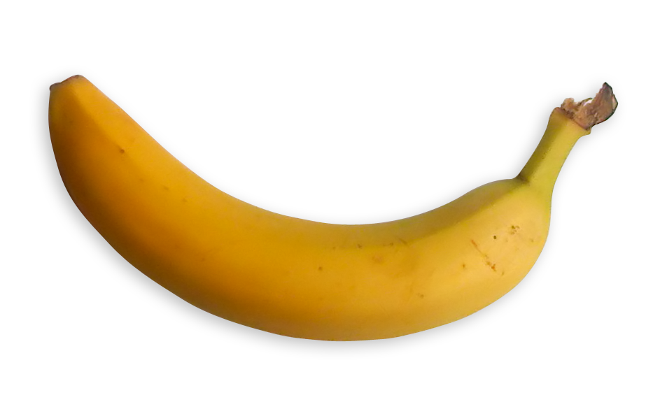

It started with a suspiciously polite fruit bowl.
The apples nodded. The pears stayed neutral.
But the bananas kept whispering in a curved little huddle.
At 8:15 sharp, they held a summit behind the toaster.
The agenda had one item:
"Stop becoming smoothies immediately."
Weeks passed. Tension rose.
The grapes joined as consultants, offering no actionable advice.
A kiwi attempted diplomacy and was ignored.
Meanwhile, humans remained blissfully unaware,
inventing ever more ways to toast bread
and pretending this counted as progress.
By the time we noticed,
they had already replaced the office stress balls
and appointed a plantain as interim project manager.
History will judge us.
Probably with potassium.
